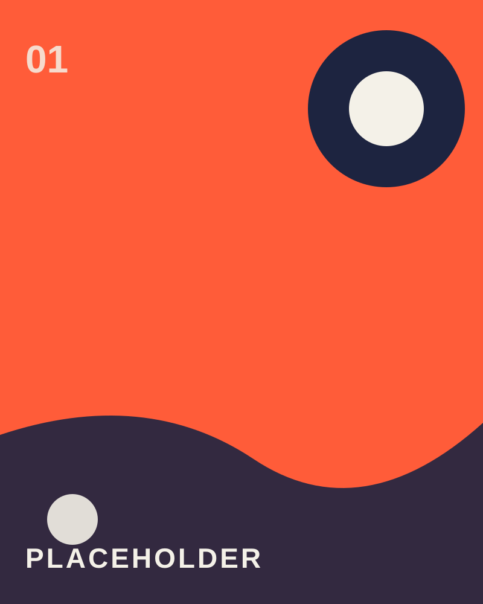
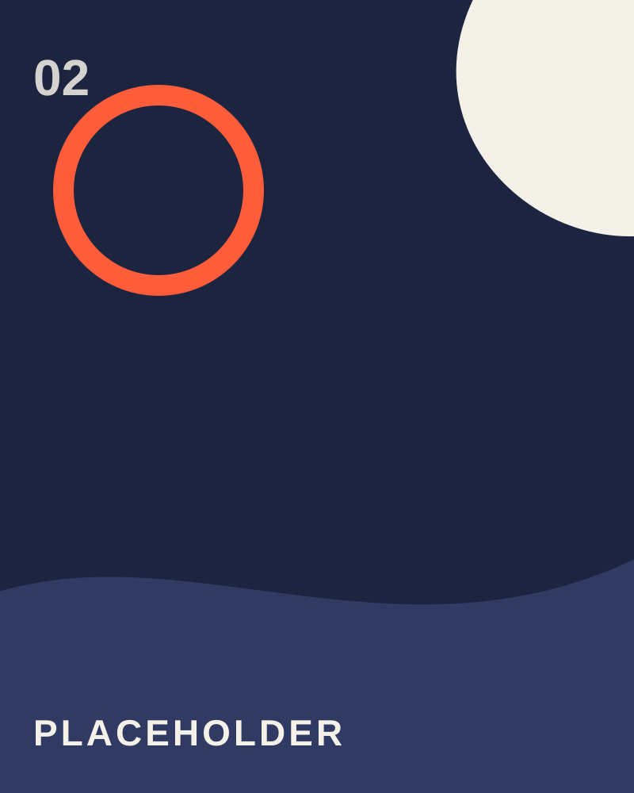
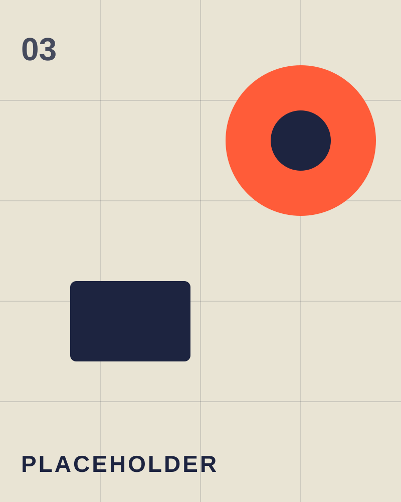
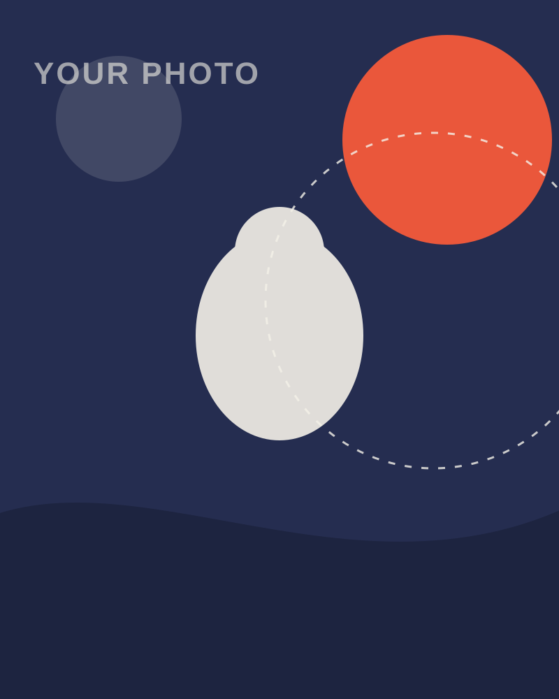

01OmniForge 多智能体 AI 协作平台
基于 LangGraph 设计 7 节点 Agent 工作流：意图分析、知识检索、任务规划、执行调度、反思评估、答案生成、记忆管理；构建 10 个 Agent、10 个插件化工具与 34 个 API。
AI DEVELOPER — 2026
专注 AI Agent 与 RAG 开发
NANYANG INSTITUTE OF TECHNOLOGY · CLASS OF 2027
// RAG 全链路设计
基于 LangGraph 的多智能体平台：代码生成、RAG 知识库问答、工具调用与 SSE 流式交互。269 个自动化测试全部通过，端到端任务完成率 95.4%。
查看详情 →
01基于 LangGraph 设计 7 节点 Agent 工作流：意图分析、知识检索、任务规划、执行调度、反思评估、答案生成、记忆管理；构建 10 个 Agent、10 个插件化工具与 34 个 API。

02构建 Multi-Agent 系统实现告警分析、日志抓取到根因定位的全自动闭环；引入 Ragas 评估框架调优检索链路，将故障诊断平均耗时从 12 分钟缩短至 45 秒。

03构建完整 RAG 链路：文档解析、结构化切块、Embedding、混合检索、Rerank 与上下文增强；设计 6 类结构感知 Chunk 策略，支持 10+ 种文档格式，Recall@10 达 82.2%。
我是 cyjpj（孙严培），南阳理工学院计算机与软件学院本科生，预计 2027 年 6 月毕业。 主攻 RAG 与 AI Agent：精通检索增强生成全链路（文档解析、Chunk 策略、Embedding、 混合检索、Rerank、效果评估），熟悉 LangGraph 多智能体架构与 AI 服务工程化。
曾在河南天元智联科技担任 AI Agent 开发实习生，用 LangGraph 构建故障诊断智能体， 将平均诊断耗时从 12 分钟缩短至 45 秒、根因识别准确率从 65% 提升到 92%。 热爱开源技术，持续跟进业界最新的 Agent 论文与框架演进。

📷 * 照片替换位置热爱开源与前沿 AI，
— cyjpj
把每个想法做成稳定好用的产品。